40 OCR entries (duplicates kept).
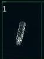
1 FlareBeam Particle Cannon Yield:10 Range:1580 Rate:12 Energy:3.1
The FlareBeam particle cannon is a rapid fire, low energy, low yield
weapon often provided to new mercenaries. It packs a decent punch for
its low cost and energy use.
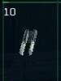
10 Razor Particle Cannon Yield:55 Range:980 Rate:25 Energy:4.7
The Razor particle cannon is a short range weapon designed for close
combat. While it is limited by the shortest range of any particle cannon,
it also uses the least energy of any class 3 weapon.
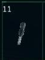
11 Predator Particle Cannon Yield:58 Range:1040 Rate:25 Energy:4.9
The Predator particle cannon is effectively the same design as the
Razor, but optimized for a slightly longer range and higher yield. The
only significant drawback to this variant of the design is its higher
cost.
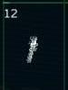
12 Trebuchet Particle Cannon Yield:28 Range:1180 Rate:28 Energy:5.1
The Trebuchet particle cannon is a specialized weapon designed to deplete
the shields of a target. This weapon is best used with other support
spacecraft nearby ready to attack with other weapon types. It is also
most effective when used with a beam weapon.
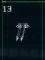
13 Atlas Particle Cannon Yield:70 Range:1080 Rate:28 Energy:5.3
The Atlas particle cannon is a high yield, short range, class 3 weapon
designed to inflict maximum damage with each shot. Its high energy use
and low firing rate can limit its effectiveness in certain roles, but
with sufficient energy, it is a powerful weapon for capital ship and station
engagements.
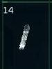
14 Phantom Particle Cannon Yield:75 Range:1220 Rate:28 Energy:5.5
The Phantom particle cannon builds on the Atlas design by extending
the range and yield. Its only drawbacks are its higher energy use and
cost.
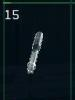
15 Banshee Particle Cannon Yield:40 Range:1120 Rate:28 Energy:5.7
The Banshee particle cannon is a high powered kinetic weapon designed
to knock a target off course. It is best used in a support or defensive
role, although it does also do moderate class 2 level damage.
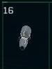
16 Refractor Laser Beam Cannon Yield:28 Energy:2.7
The Refractor Laser beam cannon is a low power weapon using basic technology.
It uses very little power, but also inflicts the least amount of shield
damage.
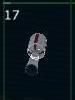
17 Metal-Vapor Laser Beam Cannon Yield:35 Energy:3.5
The Metal-Vapor Laser beam cannon uses a low level of energy and has
a low yield against shields.
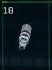
18 Coil Laser Beam Cannon Yield:42 Energy:4.5
The Coil Laser beam cannon uses a moderate level of energy and has
a moderate yield against shields.
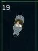
19 Neodymium Laser Beam Cannon Yield:49 Energy:5.4
The Neodymium Laser beam cannon uses a high level of energy and has
a high yield against shields.
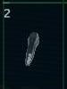
2 IceSpear Particle Cannon Yield:15 Range:1480 Rate:12 Energy:3.3
The IceSpear particle cannon offers a higher yield than the FlareBeam
and the same firing rate with only a slightly shorter range.
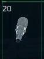
20 Fusion Laser Beam Cannon Yield:58 Energy:5.9
The Fusion Laser beam cannon offers the highest level of shield damage,
but also uses the most energy.
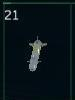
21 Echelon Class 1 Missile Yield:1000 Speed:1400 Range:11000
The Echelon missile is the fastest and longest range individual missile
available. Its yield is also the least of any missile, but several of
these can inflict significant damage and their cost is minimal.
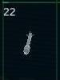
22 Viper Class 2 Missile Yield:1200 Speed:1200 Range:10500
The Viper missile is a long range, low yield design that inflicts a
higher level of damage than the Echelon at a minimal reduction in range
and speed.
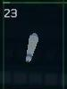
23 Rockeye Class 3 Missile Yield:1400 Speed:1000 Range:10400
The Rockeye missile is designed for medium range, small spacecraft
combat. It offers a relatively balanced mix of range, speed, and yield.
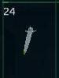
24 Starfire Class 4 Missile Yield:1800 Speed:900 Range:9600
The Starfire missile is a multi-role, medium range, moderate yield
design that works well in combat situations ranging from small ship dogfights
to large ship escorts and intercepts. It generally commands a higher price
for its versatile design.
25 Exodus Class 5 Missile Yield:2500 Speed:700 Range:8400
The Exodus missile is a short range, high yield design optimized for
capital ship strikes and large ship engagements. They are best used at
close range to leave little time for a target to use countermeasures.
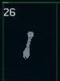
26 Leech EMP Disruptor Yield:200 Speed:1000 Range:10500
The Leech EMP missile is designed to knock out a target's weapon and
navigation systems. Its electro-magnetic pulse can disrupt a ship's sub-systems
for several seconds, but it must detonate on contact with the target to
work.
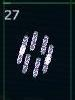
27 Excalibur Regenerative Missiles Yield:800 Speed:1800 Range:12400
The Excalibur is a regenerative missile system that constructs and
fires eight missiles at a time. It takes a few minutes to reload after
firing each salvo. The missiles themselves are relatively weak, but can
be effective when collectively fired on individual targets.
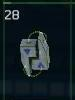
28 Stealth Stealth Field
Stealth devices can cloak your ship from sensors and visual detection
for a brief period of time. They are installed on secondary weapon hardpoints
and can only be used once.
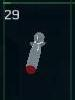
29 Disruptor Drive/Shield Disruptor Yield:5 Speed:250 Range:7600
Disruptors interfere with jump drives and shield systems, knocking
out shield arrays and temporarily preventing jump drive engagement. The
weapon is fired without a lock. It will eventually detonate and send
out a disruption pulse with a range of about 5K.
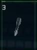
3 FireFury Particle Cannon Yield:24 Range:1280 Rate:14 Energy:3.5
The FireFury particle cannon provides nearly the same level of damage
as the StarGuard cannon with a slightly longer range. Although its firing
rate is comparable to lower class weapons, its shorter range is a compromise.
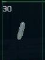
30 Lynx Engine System Missile Yield:900 Speed:800 Range:9000
The Lynx missile targets a ship's engine system. Overall impact damage
is relatively low, but the missile can critically damage a ship's engine
system.
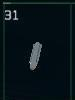
31 Rage Weapon System Missile Yield:950 Speed:850 Range:9100
The Rage missile targets a ship's weapons system. Overall impact damage
is relatively low, but the missile can critically damage a ship's weapon
system.
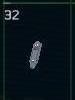
32 Cyclone Kinetic Missile Yield:1500 Speed:1000 Range:9800
The Cyclone missile is a medium range, medium yield weapon that also
inflicts a kinetic burst on a target, potentially knocking it off course.
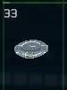
33 D Mine Disruptor Mine
Disruptor mines are a disruption weapon that disables the jump drives
of any ships in range when detontated. They will detonate when a ship
approaches them at close range. A range indicator will be displayed on
the HUD of the ship that places it.
34 Probe Long Range Probe
Probes provide location data for objects within range on the NAV console.
Once deployed, a circle will be displayed on the nav map indicating the
range of the probe.
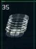
35 Rail Cannon Rail Cannon Yield:5400 Range:5000
The Rail Cannon is the only energy based weapon that can be installed
on secondary hardpoints. It requires charging before firing its single
round. It is also an extremely volatile weapon and must be fired before
the internals of the weapon overheat and explode.
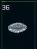
36 Fuel Pack Fuel Pack
Fuel packs provide 200 units of fuel each. They can be installed on
secondary hardpoints and used to extend the range of a ship without the
need to stop and refuel at a station, city, or carrier.
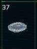
37 Charge Pack Charge Pack
Charge packs provide a full recharge to a ship's energy reserves. They
can be installed on secondary hardpoints.
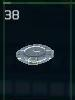
38 Shield Pack Shield Pack
Shield packs provide a significant charge to a ship's shield system.
They can be installed on secondary hardpoints and raise all arrays by
about 50%.
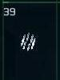
39 Rocket Pack Rocket Pack Yield:1800 Range:5000
Rocket Packs fire a series of rockets in sequence at very high speed.
They require manual aiming and carry a high price, but can be very effective
in strike missions against capital ships. Although small, rail propulsion
provides a very high level of damage and long range.
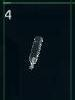
4 StarGuard Particle Cannon Yield:32 Range:1220 Rate:14 Energy:3.7
The StarGuard particle cannon is the most powerful class 1 weapon available.
It's still a lower powered plasma based weapon, but it offers near class
2 level yield with a longer range.
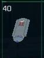
40 Torpedo Torpedo Yield:4000 Speed:1400 Range:5000
Torpedoes are long range weapons with a high yield. They lack a guidance
system and must be aimed manually, but are also heavily armored and resistant
to capital ship AMS (Anti-Missile System) beam cannons.
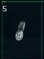
5
Stalker Particle Cannon Yield:38 Range:1180 Rate:20 Energy:3.8
The Stalker particle cannon is a class 2 weapon designed for efficient
energy use in exchange for a lower yield and shorter range.
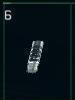
6 Eclipse Particle Cannon Yield:25 Range:1160 Rate:20 Energy:4.0
The Eclipse particle cannon is a kinetic weapon designed to disrupt
a target's ability to maintain a consistent orientation, making it more
difficult for the target to effectively counter attack. It offers a low
yield, so it is best used in conjunction with other weapons or in a defensive
role.
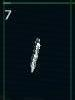
7 StarForge Particle Cannon Yield:45 Range:1240 Rate:22 Energy:4.2
The StarForge particle cannon is a moderate class 2 weapon that provides
an even balance between yield, energy use, and firing rate.
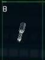
8 Maxim-R Particle Cannon Yield:50 Range:1480 Rate:22 Energy:4.4
The Maxim-R particle cannon is a powerful, long range class 2 weapon
designed for medium to long range fighter engagements. It features the
rapid firing rate of a class 2 design while including the long range of
a class 1 design. It has the highest energy use of any class 2 weapon,
but also the highest yield.
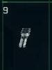
9 SunRail Particle Cannon Yield:20 Range:1180 Rate:25 Energy:4.6
The SunRail particle cannon is an energy depletion weapon. It's best
used with other weapons or in a defensive role to limit the attack capabilities
of a target. Several hits from this cannon can deplete the primary energy
reserve of a target ship.